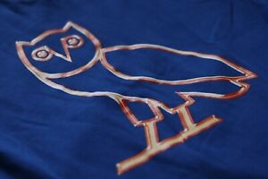

 OVO (October's Very Own) Sound es una compañía discográfica canadiense fundada por el rapero Drake, Noah "40" Shebib y Oliver El-Khatib en 2012.1 OVO Sound consta de Drake y de varios productores, tales como Noah "40" Shebib, Boi-1da, T-Minus, Mike Zombie junto con varios artistas como: PartyNextDoor, Majid Jordan.
OVO diseña y fabrica ropa de primera calidad, ropa de abrigo, accesorios y artículos para el hogar inspirados en sus raíces canadienses.
El acrónimo OVO (October's Very Own) representa mucho más que el significado horoscópico literal. Drake formó el clan junto a los cofundadores Noah "40" Shebib y Oliver El-Khatib.
El auge de la etiqueta OVO de Drake. Se espera que la línea de ropa deportiva contemporánea, en copropiedad del rapero canadiense Drake y sus socios comerciales Oliver El-Khatib y Noah "40" Shebib, alcance los 50 millones de dólares en ingresos este año.